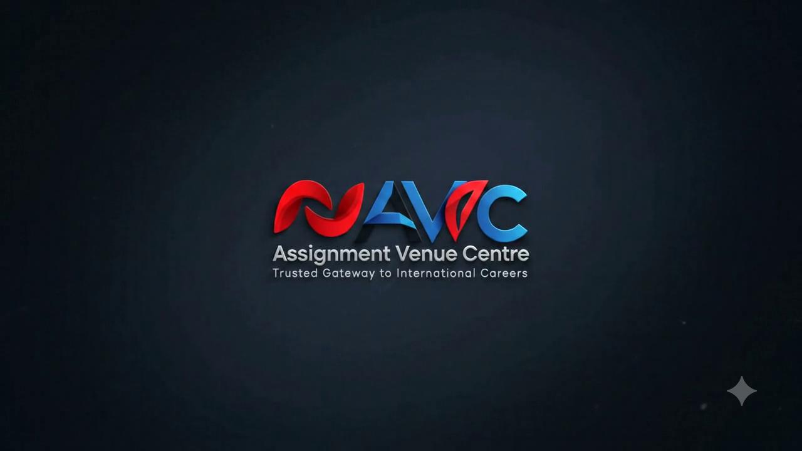

Official AVC logo
Used across the public website as AVC's official visual identity.
Official media
This page is the public media directory for Assignment Venue Center. It uses AVC's existing original brand assets and links only to official channels controlled by AVC.
Used across the public website as AVC's official visual identity.

Existing AVC repository asset used for brand presentation. It is not presented as an office/team photograph.
Use these channels for public updates, recruitment information and company media.
Recruitment guidance, company videos and approved public updates.
Open @AssignmentvenueCentre →Public announcements and company activity from AVC's official page.
Open Facebook →AVC job updates and public vacancy announcements.
Open WhatsApp Channel →Professional updates and business/recruitment network presence.
Open LinkedIn →Primary source for AVC company information, services, jobs, trust and contact details.
assignmentvenuecentre.me →Business, recruitment coordination and verification enquiries.
info@assignmentvenuecentre.me →AVC will publish office/team/interview media only when the original approved files are available. Until then, the site will not substitute AI-generated people, stock-office photographs or invented event imagery.
Use the official media and vacancy channels.